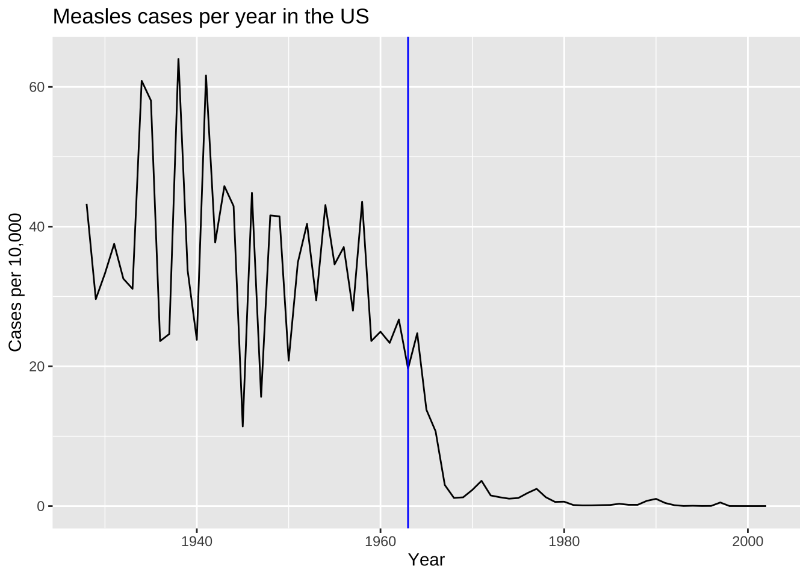
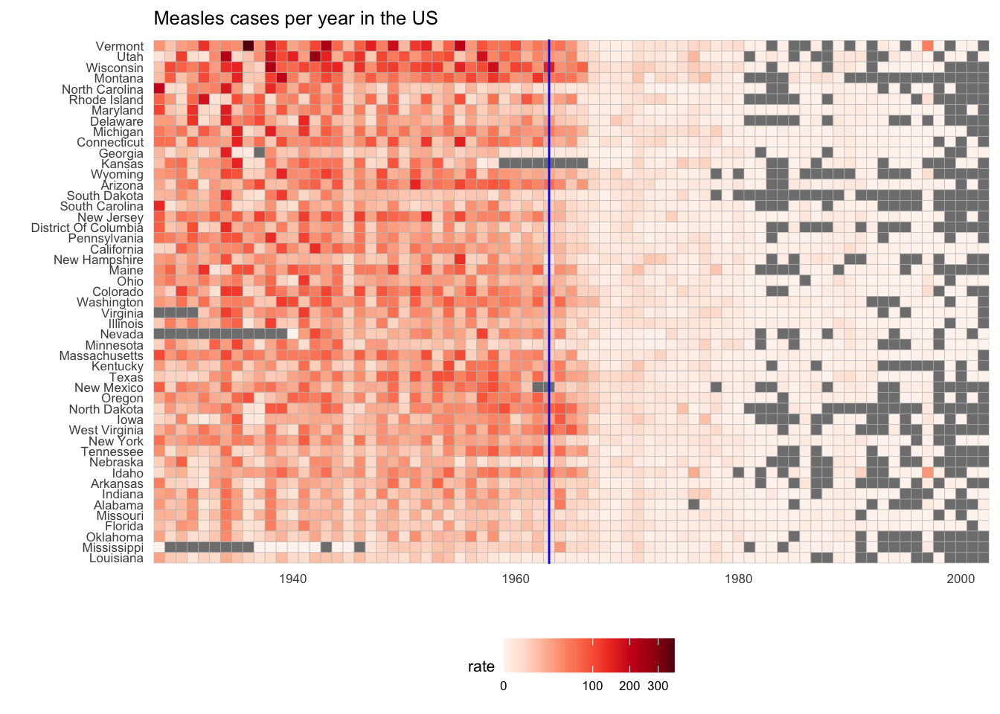
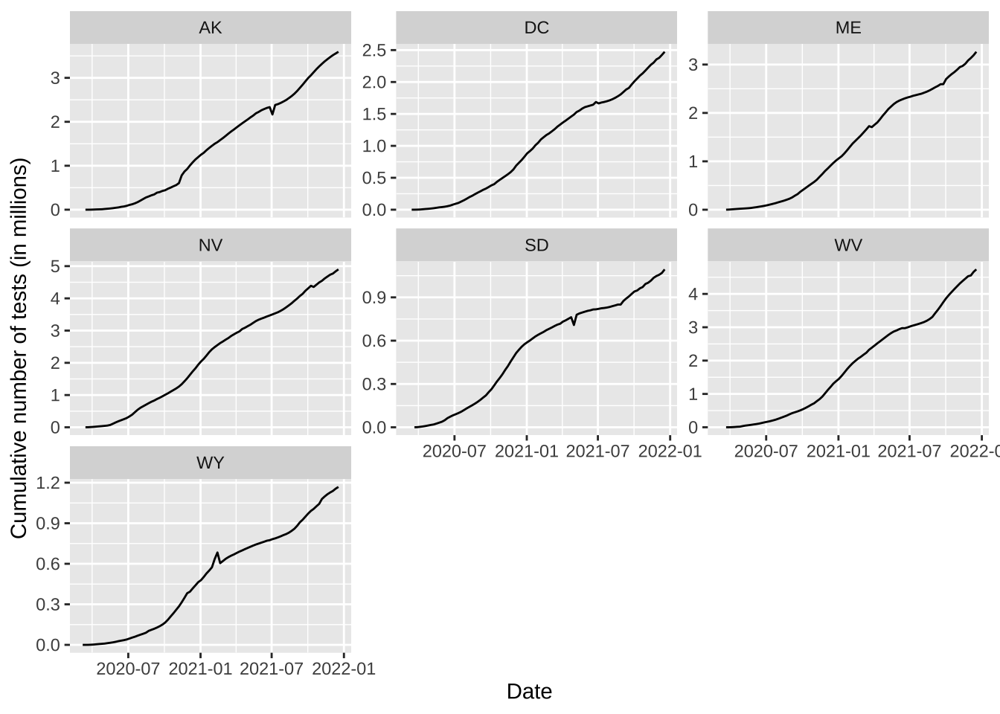
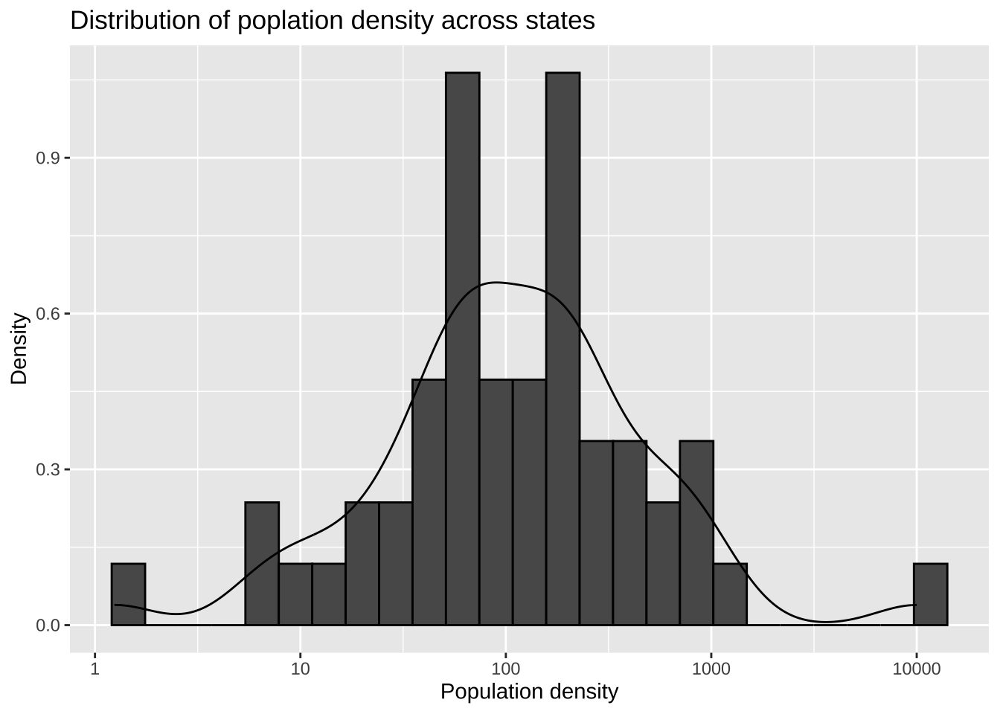

This is a preliminary version of problem set 1. The final version will be shared through GitHub.
Reminders:
Add a title to all your graphs.
Add a label to the x and y axes when not obvious what they are showing.
Think about transformations that convey the message in clearer fashion.
Measles
Load the dslabs package and figure out what is in the us_contagious_diseases dataset. Create a data frame, call it avg, that has a column for year, and a rate column containing the cases of Measles per 10,000 people per year in the US. Because we start in 1928, exclude Alaska and Hawaii. Make sure to take into account the number of weeks reporting each year. If a week was not report, it should not be included in the calculation of the rate.
library(tidyverse)
── Attaching core tidyverse packages ──────────────────────── tidyverse 2.0.0 ──
✔ dplyr 1.1.1 ✔ readr 2.1.4
✔ forcats 1.0.0 ✔ stringr 1.5.0
✔ ggplot2 3.4.2 ✔ tibble 3.2.1
✔ lubridate 1.9.2 ✔ tidyr 1.3.0
✔ purrr 1.0.1
── Conflicts ────────────────────────────────────────── tidyverse_conflicts() ──
✖ dplyr::filter() masks stats::filter()
✖ dplyr::lag() masks stats::lag()
ℹ Use the conflicted package (<http://conflicted.r-lib.org/>) to force all conflicts to become errors
Use the data frame avg to make a trend plot showing the cases rate for Measles per year. Add a vertical line showing the year the Measles vaccines was introduced. Write a short paragraph describing the graph to someone you are urging to take the Measles vaccines.
library(ThemePark)avg |>ggplot(aes(year, rate)) +geom_line() +geom_vline(xintercept =1963, color ="blue") +theme_barbie()

Is the pattern observed above the same for each state? Add a grey trend line for each state to the plot above. Use a transformation that keeps the high rates from dominating the figure.
us_contagious_diseases |>filter(disease =="Measles"& weeks_reporting >0) |>mutate(rate = count*52/weeks_reporting/population *10000) |>ggplot(aes(x = year)) +geom_line(aes(y = rate, group = state), color ="grey", alpha =0.5) +geom_line(data = avg, aes(x = year, y = rate)) +## avg was defined in previous exercisescale_y_continuous(trans ="sqrt") +geom_vline(xintercept =1963, color ="blue")
In the plot above we can’t tell which state is which curve. Using color would be challenging as it is hard if not impossible to find 48 colors we humans can distinguish. To make a plot where you can compare states knowing which is which, use one of the axis for state and the other for year, and then use hue or intensity as a visual cue for rates. Use a sqrt transformation to avoid the higher rates taking up all the color scale. Use grey to denote missing data. Order the states based on their highest peak.
library(RColorBrewer)mycolors <-brewer.pal(9, "Reds")us_contagious_diseases |>filter(!state %in%c("Hawaii","Alaska") & disease =="Measles") |>mutate(rate = count/population*10000*52/weeks_reporting,state =reorder(state, rate, max, na.rm =TRUE)) |>ggplot(aes(year, state, fill = rate)) +geom_tile(color ="grey") +scale_x_continuous(expand =c(0,0)) +## to remove extra space on sidesscale_fill_gradientn(colors = mycolors, trans ="sqrt") +geom_vline(xintercept =1963, color ="blue") +theme_minimal() +theme(panel.grid =element_blank(), legend.position ="bottom", text =element_text(size =8)) +labs(title ="Measles cases per year in the US", x ="", y ="")

COVID-19
The csv file shared here includes weekly data on SARS-CoV-2 reported cases, tests, COVID-19 hospitalizations and deaths, and vaccination rates by state.
Import the file into R without making a copy on your computer.
Examine the dataset.
Write a sentence describing each variable in the dataset.
Rows: 9853 Columns: 15
── Column specification ────────────────────────────────────────────────────────
Delimiter: ","
chr (2): state, state_name
dbl (13): population, region, mmwr_year, mmwr_week, cases, tests, hosp, deat...
ℹ Use `spec()` to retrieve the full column specification for this data.
ℹ Specify the column types or set `show_col_types = FALSE` to quiet this message.
One of these columns could benefit from being a factor. Identify the column and convert it to factor.
dat <-mutate(dat, region =factor(region))
Rather than providing a date, the dataset provides MMWR year and week. Read this document and write a function to convert these to the start of the MMWR week in ISO-8601.
library(lubridate)mmwr_to_date <-function(mmwr_year, mmwr_week) { first_day <-floor_date(make_date(mmwr_year, 1, 4) , unit ="week") date <- first_day +weeks(mmwr_week -1) return(date)}
Add a columns start_date and end_date with the start and end of the MMWR week. Confirm that it worked by computing the MMWR week and year for both start and end date and comparing it to the MMWR week and year provided.
dat <- dat |>mutate(start_date =mmwr_to_date(mmwr_year, mmwr_week),end_date = start_date +days(6))
dat <- dat |>mutate(start_date =mmwr_to_date(mmwr_year, mmwr_week),end_date = start_date +days(6))## check : these should all be TRUEdat |>summarize(w1 =all(epiweek(start_date) == mmwr_week),y1 =all(epiyear(start_date) == mmwr_year),w2 =all(epiweek(end_date) == mmwr_week),y2 =all(epiyear(end_date) == mmwr_year))
Make a trend plot similar to the one we made for Measles:
Include a trend line for the US cases rate. Use per 100,000 person per week as the unit.
Add a trend for each state, with color representing region.
Use the end of the week date for your x-axis.
Add a vertical dashed line on the day COVID-19 vaccination started being delivered in the US.
Write a paragraph describing the COVID-19 pandemic by describing the plot.
The number of cases depends on testing capacity. Note that during the start of the pandemic, when we know many people died, there are not that many cases reported. Also notice somewhat large variability across states that might not be consistent with actual prevalence. The tests columns provides the cumulative number of tests performed by the data represented by the week. This data is not official CDC data. It was provided by Johns Hopkins Coronavirus Resource Center. Before using the data, explore the data for each state carefully looking for potential problems.
For each state compute and plot the number of tests perforemd each week. Look at the plot for each state and look for possible problems. No need to make this plot pretty since we are just using it for data exploration. Report any inconsistencies if any.
To see if the inconsistencies seen in the previous plot are a problem if we are only going to look at the total number of tests at the end, plot the cumulative tests for each of the states with inconsistencies and see if the results are sensible. Explain your answer in 1-2 sentences.
JHU stopped reporting some time in 2021. What was that date? Show the day in the format September 18, 2022.
Compute the number of tests per capita for the last day JHU reported these statistics. Make a boxplot of these values for each region and include the state level data with the state abbreviation as a label. Write a sentences describing these differences you see and how this could affect our interpretation of differences in cases rates across states.
last_day <-as_date("2021-1-2") ## this should come from the previous exercise... dat |>filter(end_date == last_day) |>ggplot(aes(region, tests/population)) +geom_boxplot() +geom_text(aes(label = state)) +labs(x ="Region", y ="Test per capita", title ="SARS-COV2 tests per person")

Although JHU stopped collecting testing data from the states, the CDC collected data from a few laboratories. We provide these date in this url.
Import the data into R without downloading the file.
Make sure that you create a data frame with a column with dates in Dates format and tests as numbers.
Rows: 183 Columns: 2
── Column specification ────────────────────────────────────────────────────────
Delimiter: " "
chr (2): date, tests
ℹ Use `spec()` to retrieve the full column specification for this data.
ℹ Specify the column types or set `show_col_types = FALSE` to quiet this message.
tests <- tests |>mutate(date =mdy(date), tests =parse_number(tests))## alternatively we can re-read the filetests <-read_delim(url, delim =" ", col_types =cols(date =col_date(format ="%m-%d-%y"),tests =col_number()))
Plot the tests per week to see the trend in time. Write a sentence of the pattern you see.
At the start of the pandemic there were few tests conducted and now we are also seeing a drop.
The analysis on tests points to cases as not being a good measure of the state of the pandemic. Remake the trend plot but using death rates instead of cases rates. Write a sentence on how this plot better shows about the start of the pandemic that the cases plot did not.
We see that the highest death rates were actually at the start of the pandemic and that is was particularly bad in the northeast.
We want to examine the percent of the population that completed the first series of vaccines, received the booster, and received the bivalent booster, respectively. First run this line of code and examine what it does.
Then make a plot showing the percent of population vaccination for each state. Use color to represent region.
Show the dates on the x axis with the month abbreviation and year.
Place the three plots vertically, on top of each other.
Show percentages on the y axis. Hint: use scales::percent.
For each period used to make the trend plot for the three series, make a boxplot showing the maximum percentage reached by every state stratified by region. Let the range of the y axis adapt to the range of each group.
Use the plot above to define four periods: No vaccine, First vaccine, Booster, and Bivalent. Get the dates when each vaccine series starts (these don’t have to be exact). Create a version of your data frame with a column called period that keeps the period associated with the week contained in each row.
Define a new variable that stores the maximum vaccination percentage reached during each period. But for the first vaccine period use series_complete, for the booster period use the booster column, and for the bivalent period use the bivalent percentages. Remove data from the no vaccine period. The make a plot comparing the COVID-19 death rate to the percent vaccinated. Use color to denote region. You should produce three plots, each with it’s own axes range. Put the three plots in three entries of a 2x2 layout. Comment on what you observe.
Does population density have an effect on infections? Use the state.area predefined variable to add compute population density. Make a histogram and density plot of state densities. Note that you will have to add the geographical area for Puerto Rico and DC as it is not included in state.area
my.state.abb <-c(state.abb, "PR", "DC")my.state.area <-c(state.area, 5325, 69)popdens <- dat |>filter(end_date ==min(end_date)) |>select(state, population) |>mutate(area = my.state.area[match(state, my.state.abb)]) |>mutate(popdens = population / area) popdens |>ggplot(aes(popdens)) +geom_histogram(aes(y =after_stat(density)), bins =25, color ="black") +geom_density() +scale_x_log10() +labs(title ="Distribution of poplation density across states", x ="Population density", y ="Density")

Plot death rates versus density for the four periods defined above.